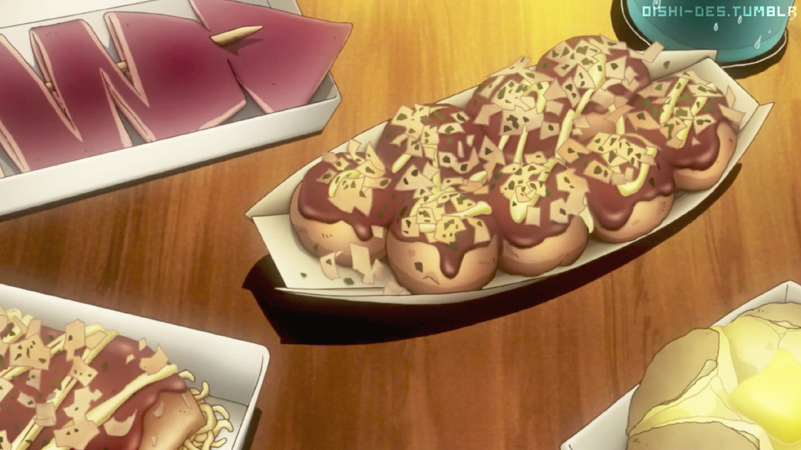

Takoyaki

Takoyaki is a ball-shaped snack made of flour-based batter and cooked in a special molded pan
Ingredients
- Dashi-Flavored batter
- Octopus
- Beni Shoga
- Green onion
- Tempura scraps
- Eggs
Steps
- Cut up all ingredients and mix with 2 eggs
- Season to your liking
- Throw batter into takoyaki pan holes